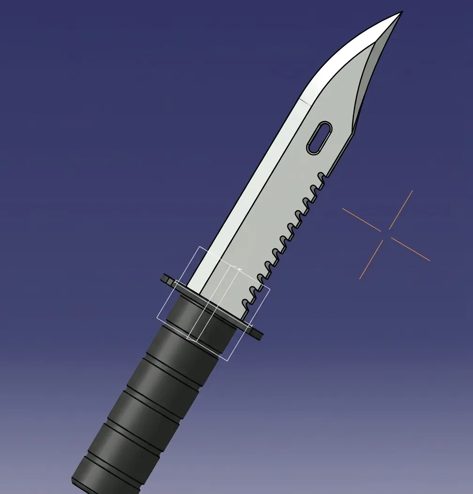
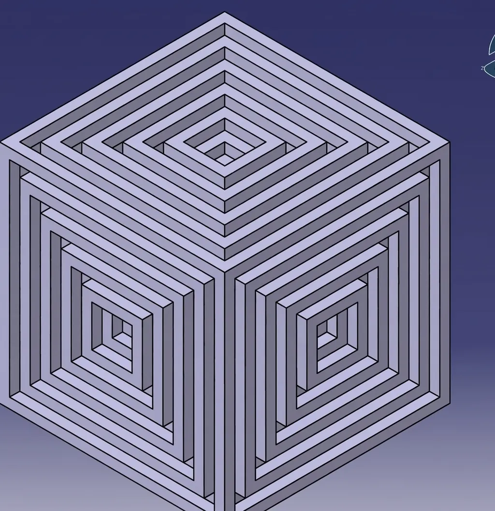
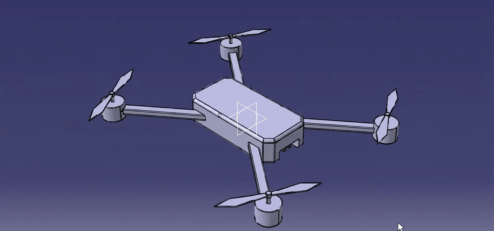
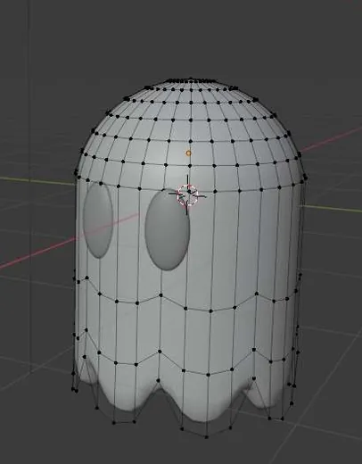

3D Design
●
Modeling
●
Training
3D Design
I model in two tools: CATIA for precision parts, Blender for anything that needs to feel alive. These are the pieces I keep coming back to.
- ToolsCATIA ● Blender
- FocusHard-surface modeling
- AlsoTraining interns on 3D basics
CATIA
precision
CATIA is where I learned 3D: exact dimensions, clean sketches, parts that could actually be manufactured. A combat knife, a quadcopter drone, and a cube study built from one repeated profile.



Blender
character work
A little ghost, modeled and shaped vertex by vertex in Blender. Small piece, but it taught me more about topology than any tutorial.
